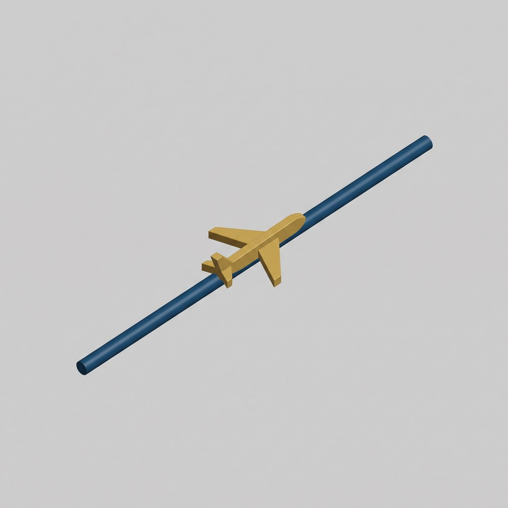
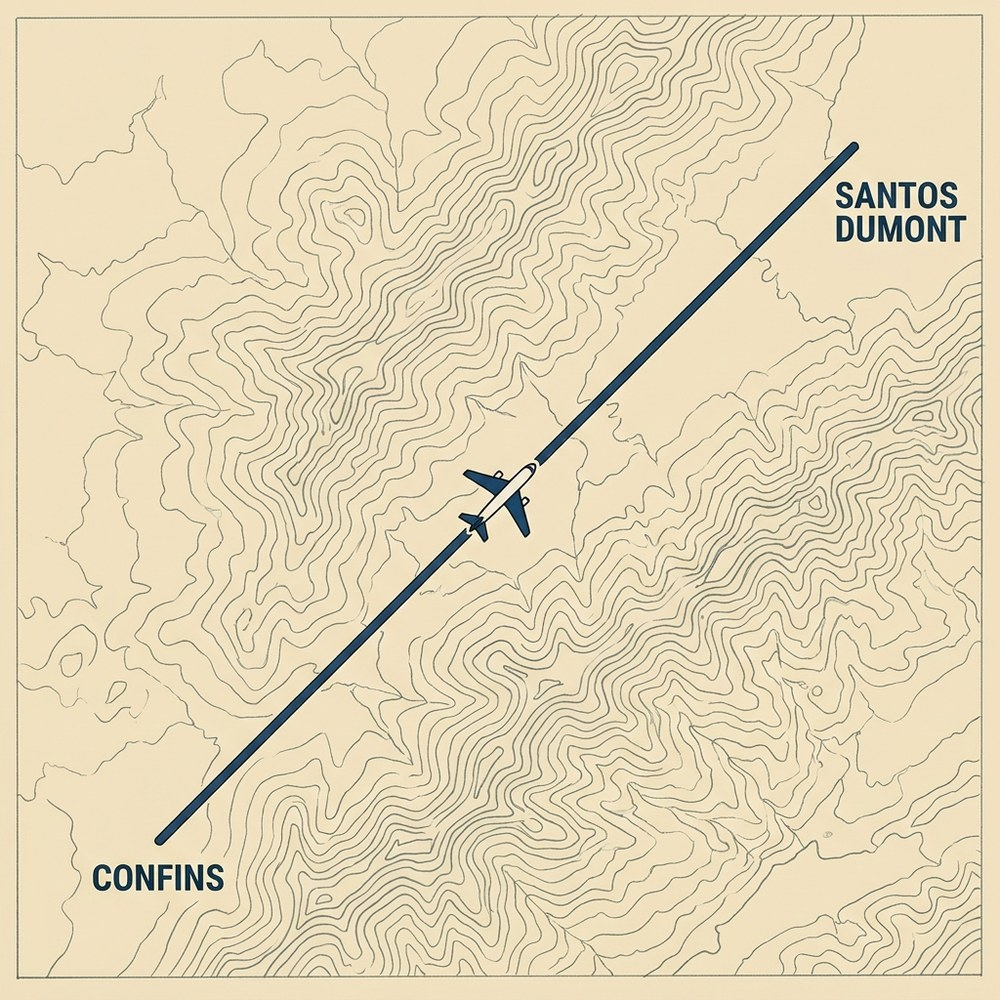
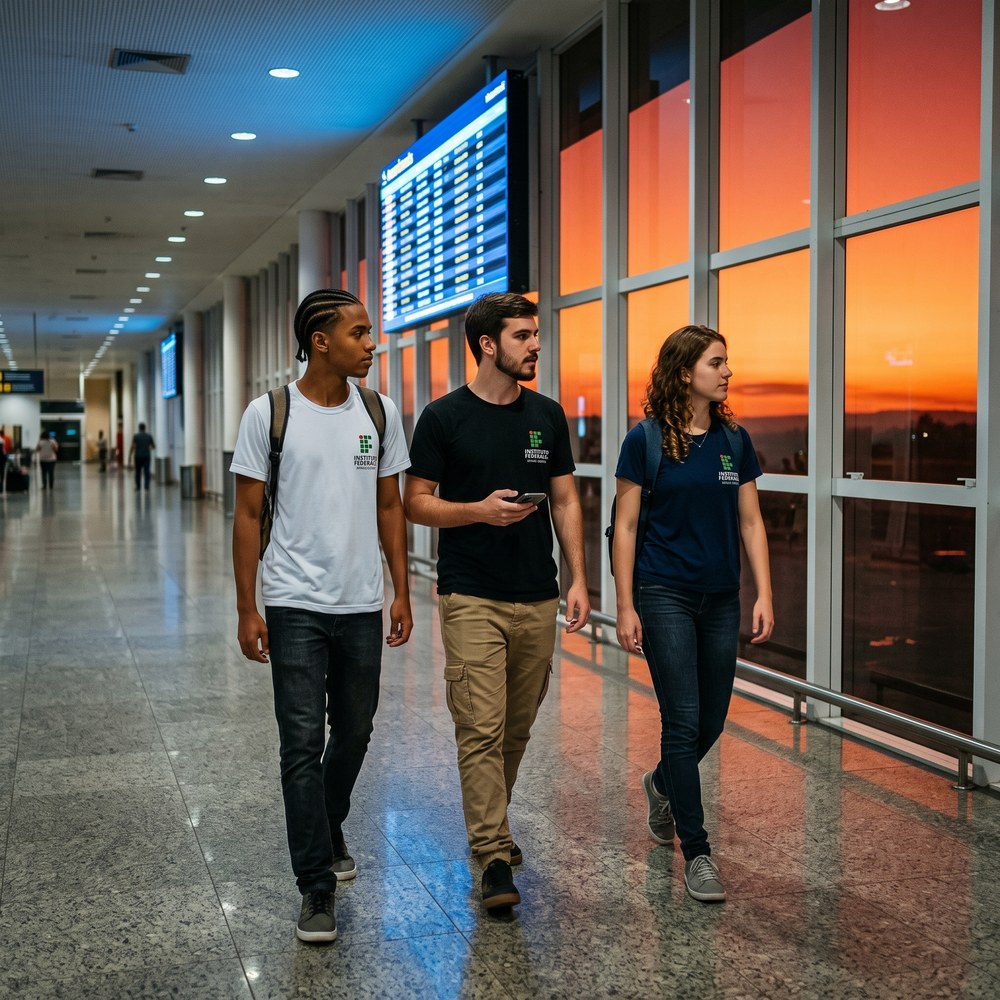
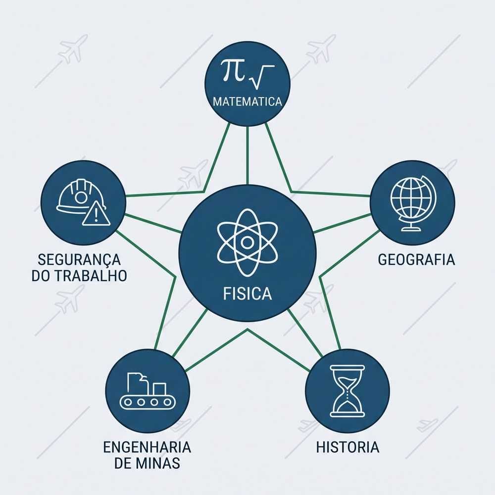

“O movimento, uma vez impresso num corpo, persiste por si mesmo — cessa apenas quando outra causa o interrompe.”

O portão de embarque abriu às oito e cinco da manhã. Sofia entrou no avião com o caderno de campo debaixo do braço; Lucas parou um instante na porta, olhando a curva prateada da fuselagem; Pedro já contava as fileiras até encontrar o assento 14. A turma do curso técnico viajava para o Rio de Janeiro numa visita ao Museu Casa da Moeda — o destino final, séculos atrás, de boa parte do ouro que saía das lavras de Vila Rica. O Prof. Julio acomodou-se do outro lado do corredor, na mesma fileira dos três.

Às oito e meia em ponto, o avião decolou de Confins. Subida, curva, o cinto apertado, aquela pressão conhecida contra o encosto — tudo o que a trilha passada ensinou a nomear. Mas o Prof. Julio não estava interessado na decolagem.
— A parte importante da aula de hoje — disse ele, inclinando-se sobre o corredor — começa quando nada estiver acontecendo.
Minutos depois, o comandante anunciou que a aeronave havia atingido a altitude de cruzeiro. O ponteiro do mundo pareceu parar. Pedro abriu o mapa de bordo na tela do encosto: um avioncinho parado sobre o mapa de Minas, e embaixo, em letras miúdas, velocidade em relação ao solo: 720 km/h.
— Setecentos e vinte — leu Pedro. — E eu conseguindo equilibrar o copo de suco na bandeja.
— É isso que eu queria que vocês vissem — respondeu o professor. — Olhem a tela de novo daqui a cinco minutos.
Sofia cronometrou. Cinco minutos depois, a velocidade era a mesma: 720 km/h. Dez minutos: 720. O avioncinho avançava sobre o mapa, cruzava a divisa de Minas com o Rio, mas o número não se mexia. Lucas olhou pela janela: nuvens paradas, chão parado, asa parada. A sensação era de estar pendurado no céu, imóvel — a 720 quilômetros por hora.
— Professor — disse Sofia, com o lápis já apontado para o caderno —, se essa velocidade não muda nunca, então eu não preciso da janela nem da tela. Eu sei o relógio, eu sei a velocidade... eu sei onde a gente está. Certo?
O Prof. Julio sorriu do jeito de quem esperou a manhã inteira por uma frase.
— Guarde essa. A pergunta de hoje é exatamente essa: se a velocidade é constante e eu conheço o ponto de partida, posso dizer onde qualquer objeto estará em qualquer instante futuro — ou isso é bom demais para ser verdade?
Às nove e quinze, o avião tocou a pista do Santos Dumont. Quarenta e cinco minutos de porta a porta — e, no meio deles, meia hora em que a física inteira coube numa equação de primeiro grau.

Os dois aeroportos desta história existem exatamente como descritos. Abra o Google Maps e pesquise por “Aeroporto Internacional de Belo Horizonte — Confins, MG”; depois, numa segunda busca, “Aeroporto Santos Dumont, Rio de Janeiro, RJ”.
Como medir a distância do voo:
1. No mapa, clique com o botão direito sobre o Aeroporto de Confins.
2. Escolha “Medir distância” no menu.
3. Clique sobre o Aeroporto Santos Dumont — o Maps traça a linha reta entre os dois pontos.
4. Leia o valor: cerca de 360 km em linha reta, cruzando a Mantiqueira.
5. Compare com a distância por rodovia (~440 km pela BR-040): o avião voa a linha que a estrada não pode seguir.
Divida os 360 km pelos 30 minutos de cruzeiro e você encontrará, sem nenhum instrumento de bordo, os 720 km/h da tela do Pedro. É esta trilha inteira numa conta de padaria.
Antes de qualquer equação, é preciso reconhecer o personagem desta trilha quando ele aparece. O Movimento Uniforme é o mais discreto de todos os movimentos: ele não empurra ninguém contra o banco, não joga ninguém para a frente, não faz barulho novo. A imagem a seguir mostra o seu retrato mais honesto — uma tela de bordo em que o número da velocidade simplesmente se recusa a mudar.

O trole pneumático da Mina de Passagem, em Mariana, desce desde 1890 os seus 315 metros de galeria retilínea a velocidade praticamente constante — um dos transportes subterrâneos sobre trilhos mais antigos do Brasil ainda em operação. O guia turístico anuncia a descida com números redondos: trilho reto, 2 m/s, pouco mais de dois minutos e meio. Sem saber, ele está enunciando as duas condições do Movimento Uniforme.
Um movimento é uniforme quando a velocidade é constante e diferente de zero — e, como consequência direta, a aceleração é nula. As duas afirmações são a mesma: se v não muda, Δv = 0, e a taxa de variação da velocidade (a aceleração da trilha passada) é zero. O MU é um modelo ideal: nenhum objeto real mantém a velocidade rigorosamente constante para sempre. Ele acontece, na prática, quando as influências sobre o corpo se equilibram — o empuxo das turbinas compensando exatamente a resistência do ar, o motor da correia compensando o atrito.
Na mineração, o MU não é acidente: é especificação de projeto. Correias transportadoras, dutos de polpa e alimentadores de britador são dimensionados para operar em regime permanente — velocidade constante, vazão constante, previsibilidade total. Um sistema que acelera e freia toda hora desgasta componentes, desregula a vazão e derruba a produtividade. O operador de sala de controle monitora exatamente isto: se a velocidade da correia está no valor de projeto, o sistema está saudável.
As duas condições — e o caso especial. De volta ao voo. O Prof. Julio pediu que cada um dissesse, com as próprias palavras, o que caracterizava aquela meia hora de cruzeiro.
— A velocidade não muda — disse Pedro.
— E ela não é zero — completou Sofia. — Senão a gente estaria parado no ar.
— As duas coisas juntas — confirmou o professor. — Velocidade constante e diferente de zero. É a definição inteira. E o que vocês me dizem da aceleração?
Lucas respondeu com a trilha anterior:
— Se aceleração é a taxa de variação da velocidade, e a velocidade não varia... zero.
| Situação | Velocidade | Aceleração | Nome |
|---|---|---|---|
| Avião em cruzeiro a 720 km/h | constante ≠ 0 | zero | Movimento Uniforme |
| Avião decolando | aumenta | ≠ 0 | Movimento acelerado (T09) |
| Avião pousando e freando | diminui | ≠ 0 | Movimento retardado (T09) |
| Avião parado no portão | constante = 0 | zero | Repouso |
A última linha merece atenção: o repouso é o caso particular em que a velocidade constante vale zero. Ele satisfaz “v constante” e “a = 0”, mas não é MU — o MU exige movimento. Um trole parado na galeria e um trole descendo a 2 m/s têm a mesma aceleração (nenhuma); só o segundo está em Movimento Uniforme.
Em símbolos, a definição inteira cabe numa linha — a velocidade média da T08, que agora não é mais só média: é a velocidade de todos os instantes.
| Símbolo | Grandeza | Unidade SI |
|---|---|---|
| v | Velocidade (a mesma em qualquer trecho) | m/s (metro por segundo) |
| Δs | Deslocamento em um intervalo qualquer | m |
| Δt | Duração do intervalo | s |
E há uma condição física escondida na definição: para a velocidade não mudar, nada pode sobrar — todas as influências sobre o corpo precisam se cancelar. No cruzeiro, as turbinas não estão “ganhando” da resistência do ar; estão empatando com ela. É o empate que produz a constância. Essa ideia voltará com força total no Tema 5, quando as influências ganharem nome próprio: forças.
Se a velocidade não muda, o futuro vira uma conta. Este tópico constrói a ferramenta que transforma o relógio em localizador — a mesma que Sofia intuiu no avião: saber a hora é saber o lugar. A imagem a seguir mostra essa ideia em régua e relógio.

Os aquedutos coloniais de Ouro Preto (século XVIII) conduziam água por canaletas de pedra com declive cuidadosamente projetado: suave o bastante para a água não disparar, firme o bastante para ela não parar. O resultado era um fluxo de velocidade praticamente constante — e os construtores, sem nenhuma equação, sabiam prever quanto tempo a água levava da nascente ao chafariz. A equação horária já era usada na prática antes de ser escrita.
No MU, a posição cresce sempre no mesmo ritmo. A cada segundo, o móvel avança a mesma distância; a cada minuto, sessenta vezes essa distância. A posição em qualquer instante é, portanto, o ponto de partida mais o que foi acumulado: posição inicial + velocidade × tempo. É uma função de primeiro grau do tempo — a mais simples que existe — e é exatamente por ser simples que ela é poderosa: uma única medição de velocidade e um relógio bastam para prever tudo.
O controle de tráfego aéreo trabalha o dia inteiro com essa conta. Conhecendo a velocidade de solo de cada aeronave e sua posição num instante, o controlador projeta onde ela estará dali a 5, 10, 20 minutos — e é essa projeção que mantém as aeronaves separadas no céu. Na mina, o mesmo raciocínio diz ao operador quando o minério que entrou na correia vai chegar à pilha.
As quatro perguntas antes de qualquer conta. Antes de escrever a primeira equação, o Prof. Julio fez o trio responder, em voz alta, quatro perguntas sobre o próprio voo:
1. Onde estará posicionado o marco “Zero” da trajetória?
2. Qual será o sentido “Positivo” do movimento?
3. Qual será a posição inicial do móvel?
4. Qual será a leitura do instante inicial do estudo do movimento?
— Reparem — disse ele — que a natureza não responde nenhuma das quatro. O avião voa exatamente igual se o marco zero estiver em Confins ou no Santos Dumont. Quem responde somos nós — e é por isso que essas respostas se chamam convenções.
As quatro respostas são o contrato que o estudante assina com o problema antes de modelá-lo matematicamente — e cada uma tem um papel distinto:
| # | Pergunta | O que define | Natureza | No voo da turma |
|---|---|---|---|---|
| 1 | Onde estará posicionado o marco “Zero”? | A origem do eixo de posições | Convenção de referencial | Aeroporto de Confins (s = 0) |
| 2 | Qual será o sentido “Positivo”? | A orientação do eixo | Convenção de referencial | De Confins para o Rio |
| 3 | Qual será a posição inicial do móvel? | O valor de s₀ — onde o móvel está quando o estudo começa | Condição inicial | s₀ = 60 km (início do cruzeiro) |
| 4 | Qual será a leitura do instante inicial? | O zero do cronômetro (t₀ = 0) — quando o estudo começa | Condição inicial | O instante em que o comandante anunciou o cruzeiro |
As perguntas 1 e 2 constroem o palco: sem origem e sem orientação, “posição 180 km” não significa nada — 180 km a partir de onde, andando para que lado? As perguntas 3 e 4 dão a cena de abertura: a equação horária é uma máquina de prever o futuro, e toda previsão precisa saber de onde e de quando parte. Mudar qualquer uma das quatro respostas muda os números e os sinais da descrição — mas não muda o movimento. É o mesmo voo descrito por outro observador; a física é a mesma, a contabilidade é outra. Por isso, em toda prova, relatório ou plano de lavra, as convenções se declaram antes da primeira conta — quem esconde o referencial não erra a conta: erra a comunicação.
Esse contrato de quatro cláusulas tem dois fiadores históricos. O primeiro é René Descartes: em La Géométrie (A Geometria), apêndice do Discurso do Método publicado em 1637, ele mostrou que qualquer ponto pode ser localizado por números medidos a partir de eixos com origem e orientação escolhidas — as coordenadas que hoje levam seu nome (cartesianas). As perguntas 1 e 2 são herança direta dele: sem Descartes, posição não vira número, e sem número não há equação. O segundo é Galileu Galilei: em Il Saggiatore (O Ensaiador, 1623), ele proclamou que o livro da natureza está escrito em linguagem matemática; e nos Discorsi e Dimostrazioni Matematiche intorno a Due Nuove Scienze (Discursos e Demonstrações Matemáticas sobre Duas Novas Ciências, 1638), fez exatamente isso com o movimento — definiu o movimento uniforme, tratou o tempo como grandeza medida a partir de um instante escolhido e deduziu as relações entre espaços percorridos e tempos gastos. As perguntas 3 e 4 são o gesto galileano: disparar o cronômetro e anotar a leitura inicial. Descartes deu o onde ao movimento; Galileu deu o quando — e a equação horária que vem a seguir é o encontro dos dois.
Construindo a equação. O Prof. Julio desenhou no guardanapo uma reta com uma marca de origem.
— Vamos colocar o marco zero em Confins e orientar a reta para o Rio. No início do cruzeiro, o avião já tinha andado 60 km. Essa é a posição inicial: onde o objeto está quando o cronômetro dispara. Chamamos de s₀.
— E daí em diante ele anda 720 km a cada hora — disse Pedro. — Ou 12 km por minuto.
— Então a posição em qualquer instante é 60 km mais 12 km por minuto vezes os minutos rodados — concluiu Sofia, escrevendo antes de o professor terminar.
| Símbolo | Grandeza | Unidade SI |
|---|---|---|
| s | Posição no instante t | m (metro) |
| s₀ | Posição inicial (em t = 0) | m |
| v | Velocidade (constante) | m/s (metro por segundo) |
| t | Instante de tempo | s (segundo) |
Dois detalhes fazem diferença. Primeiro: s₀ não é o começo do mundo, é só onde o objeto estava quando você zerou o cronômetro — a origem é uma escolha sua, como o marco zero de uma rodovia. Segundo: a equação funciona para trás. Substituindo t = −5 min: s = 60 − 60 = 0 km. Cinco minutos antes do início do cruzeiro, o avião estava sobre Confins — o tempo negativo devolve o passado do movimento, desde que o movimento já fosse uniforme lá também.
Desafio de 3 minutos: abra o capítulo Mecânica e escolha a animação Movimento, no modo uniforme. Ajuste a velocidade, arraste o tempo e confira: a posição que a animação mostra é exatamente a que a Equação 2 prevê — para qualquer instante, inclusive antes do zero.
Uma equação conta a história em símbolos; um gráfico conta a mesma história de um golpe de vista. O MU produz os dois gráficos mais limpos de toda a cinemática — e aprender a lê-los aqui é o que tornará legíveis os gráficos tortos das trilhas seguintes. A imagem abaixo os coloca lado a lado.

Antes das telas, o registro gráfico de movimento era feito em papel: o tacógrafo, obrigatório em veículos de carga no Brasil desde os anos 1970, riscava a velocidade num disco de papel que girava com o relógio. Um trecho de velocidade constante aparecia como um arco perfeitamente paralelo à borda do disco — o fiscal reconhecia o movimento uniforme pelo desenho, sem ler um único número.
No gráfico posição × tempo, o MU é uma reta inclinada: a inclinação é a velocidade. Quanto mais íngreme a reta, maior a velocidade; se a reta desce, a velocidade é negativa — o móvel anda contra a orientação escolhida. No gráfico velocidade × tempo, o MU é uma reta horizontal: a velocidade não muda, então a linha não sobe nem desce — a inclinação nula é a aceleração nula. E a área entre essa reta horizontal e o eixo do tempo é um retângulo cujo valor, base × altura = Δt × v, é exatamente o deslocamento.
A sala de controle de uma usina de beneficiamento exibe exatamente esses gráficos, em tempo real, para cada correia do circuito. Velocidade em linha reta horizontal = regime permanente = tudo bem. Qualquer inclinação nessa linha é um evento: partida, parada, escorregamento de correia. O operador é, profissionalmente, um leitor de gráficos v×t.
Lendo as duas retas. De volta à tela do encosto: Pedro percebeu que o mapa de bordo tinha um menu escondido com um gráfico da velocidade ao longo do voo.
— Olha só: subiu torto na decolagem, ficou uma régua no meio, e vai descer torto no pouso.
— A régua do meio é a nossa trilha — disse o Prof. Julio. — E ela esconde duas informações. A primeira: a inclinação dessa linha é zero. Que grandeza é a inclinação da linha no gráfico da velocidade?
— A aceleração — respondeu Lucas. — Zero. Confere.
— A segunda é mais bonita. Sombreiem mentalmente a região entre a linha e o eixo do tempo, só no trecho da régua. Que figura aparece?
— Um retângulo — disse Sofia. — Base de meia hora, altura de 720 km/h... — ela parou, fez a conta — ...área de 360 km. A área é a distância!
| Símbolo | Grandeza | Unidade SI |
|---|---|---|
| Δs | Deslocamento (área do retângulo em v×t) | m |
| v | Velocidade constante (altura do retângulo) | m/s |
| Δt | Intervalo de tempo (base do retângulo) | s |
| Gráfico | Forma no MU | Inclinação significa | Área sob a curva significa |
|---|---|---|---|
| s × t | reta inclinada | velocidade v | — (não tem significado físico direto) |
| v × t | reta horizontal | aceleração (= 0) | deslocamento Δs |
O sinal também se lê no desenho: reta de s×t subindo = v positiva (movimento progressivo, a favor da orientação); reta descendo = v negativa (retrógrado). No gráfico v×t, linha horizontal acima do eixo = móvel avançando; abaixo = móvel voltando. Cuidado com a armadilha clássica: o gráfico s×t não é a trajetória — o avião não subiu uma rampa; a “rampa” é a posição crescendo no papel enquanto o tempo passa.
Desafio de 3 minutos: na mesma animação Movimento, observe os gráficos sincronizados: aumente a velocidade e veja a reta de s×t ficar mais íngreme enquanto a reta de v×t continua horizontal — apenas mais alta. Depois inverta o sentido do movimento e confira o que acontece com o sinal das duas retas.
Dois objetos em MU na mesma reta são duas equações de primeiro grau — e a pergunta “onde eles se encontram?” vira o problema mais clássico da cinemática escolar. Mas ele não nasceu na escola: nasceu em quem precisava saber se dois veículos na mesma via iam ou não ocupar o mesmo lugar ao mesmo tempo. A imagem a seguir arma o problema no céu.

Na Estrada Real, as tropas de mulas que desciam com o ouro e as que subiam com mercadorias compartilhavam o mesmo caminho estreito. Os tropeiros calculavam de cabeça, pela hora de partida e pelo passo das mulas, em que rancho as tropas iam se cruzar — e ajustavam a viagem para que o cruzamento acontecesse onde havia espaço. Era o problema do encontro, resolvido sem álgebra, dois séculos antes dela chegar à escola.
Cada móvel em MU tem a sua equação horária, com o seu s₀ e a sua v — as duas escritas no mesmo referencial, com a mesma origem e a mesma orientação. O encontro é o instante em que os dois ocupam a mesma posição: s_A = s_B. Igualar as duas equações produz uma equação de primeiro grau em t; resolvida, ela entrega o instante do encontro, e qualquer uma das equações horárias entrega o local.
É por isso que o controle de tráfego — aéreo, ferroviário ou de mina — existe. Dois troles na mesma galeria, dois trens na mesma linha, dois caminhões na mesma rampa: em todos os casos, o sistema calcula continuamente o ponto de encontro projetado e age antes que ele aconteça, alterando velocidade ou segregando vias. O encontro de móveis, na indústria, é um problema que se resolve para não acontecer.
O encontro no céu — e na galeria. O Prof. Julio propôs o problema na volta, no saguão do Santos Dumont:
— Nosso voo de ida saiu de Confins às 8h30. Suponham que, no mesmo instante, um voo idêntico tivesse saído do Santos Dumont para Confins, no corredor paralelo, também a 720 km/h de velocidade de solo. Onde os dois se cruzariam?
Sofia armou as duas equações no mesmo eixo, com origem em Confins e orientação para o Rio, tomando o trecho de cruzeiro de 360 km como modelo:
| Símbolo | Grandeza | Unidade SI |
|---|---|---|
| s_A | Avião A (Confins → Rio): s_A = 0 + 720·t | km |
| s_B | Avião B (Rio → Confins): s_B = 360 − 720·t | km |
720·t = 360 − 720·t → 1440·t = 360 → t = 0,25 h = 15 min
s_A = 720 × 0,25 = 180 km
— Quinze minutos de voo, exatamente no meio do caminho — leu Pedro. — Faz sentido: mesma velocidade, um contra o outro, o encontro é no meio.
— E se as velocidades fossem diferentes? — provocou o professor. — Dois troles na galeria da Mina de Passagem, partindo das extremidades dos 315 metros no mesmo instante: um a 2 m/s, outro a 1,5 m/s.
Lucas montou: s_A = 2t e s_B = 315 − 1,5t. Igualando: 3,5t = 315, t = 90 s, e s = 2 × 90 = 180 m — o encontro acontece mais perto da extremidade do trole mais lento.
No gráfico s×t, tudo isso é uma única imagem: cada móvel é uma reta, e o encontro é o ponto onde as retas se cruzam. Retas que se cruzam uma vez: um encontro. Retas paralelas (mesma velocidade, mesmo sentido): nunca se encontram — ou são o mesmo movimento.
O tópico final devolve a trilha para casa: da poltrona do avião para a sala de controle da usina. É aqui que o Movimento Uniforme deixa de ser modelo de sala de aula e vira parâmetro de contrato, meta de produção e item de inspeção. A imagem a seguir mostra o MU industrial em ação.

O princípio do fluxo contínuo chegou à mineração de Minas antes da eletricidade: os rosários — correntes de canecas movidas por roda d'água que drenavam as minas coloniais — só funcionavam se girassem em ritmo constante. Caneca acelerada derramava; caneca lenta afogava a galeria. O regime permanente era, já no século XVIII, a diferença entre mina seca e mina perdida.
Numa correia transportadora em regime permanente, cada ponto da correia está em MU: mesma velocidade, o tempo todo. Disso decorre a grandeza-chave dos sistemas contínuos: o tempo de residência — quanto tempo o material passa dentro do sistema. Para um trecho de comprimento L percorrido a velocidade v, ele é simplesmente t = L/v, a Equação 1 lida ao contrário. E a vazão de material (toneladas por hora) é proporcional à velocidade: v constante = vazão constante = usina previsível.
A velocidade de projeto de uma correia de minério de ferro fica tipicamente entre 3 e 6 m/s. O operador acompanha os desvios operacionais: velocidade abaixo do projeto indica sobrecarga, escorregamento ou problema no acionamento; acima, risco de derramamento e desgaste. No duto de polpa (a mistura de minério fino com água que atravessa serras por dezenas de quilômetros), a velocidade é mantida numa janela estreita: rápida demais erode o duto por dentro; lenta demais deixa o minério decantar e entupir a linha. O MU, ali, não é ideal teórico — é condição de funcionamento.
Do avião à correia. De volta a Ouro Preto, na aula seguinte, o Prof. Julio fechou o ciclo com números da indústria:
— Uma correia de 400 metros, velocidade de projeto de 3,5 m/s. Quanto tempo o minério que entra agora leva para chegar à pilha?
— Equação 2 ao contrário — disse Sofia. — t = L/v = 400 ÷ 3,5 ≈ 114 segundos. Menos de dois minutos.
— E um duto de polpa de 12 km a 1,8 m/s? — completou ele, olhando para Pedro.
— 12.000 ÷ 1,8 ≈ 6.667 s... — Pedro converteu — 1 hora e 51 minutos dentro do duto.
| Símbolo | Grandeza | Unidade SI |
|---|---|---|
| t_res | Tempo de residência do material no sistema | s (segundo) |
| L | Comprimento do trecho percorrido | m |
| v | Velocidade de operação (constante) | m/s |
— Esse número é o tempo de residência — concluiu o professor. — Ele diz à usina quando o efeito de qualquer mudança lá na entrada vai aparecer na saída. Vocês calcularam com a mesma equação que previu a chegada do nosso avião ao Rio. O Movimento Uniforme é isto: a física da previsibilidade. Quando um sistema opera em MU, o futuro dele está escrito numa equação de primeiro grau — e quem sabe ler essa equação controla o sistema.
No fim da tarde da viagem, no voo de volta, o comandante anunciou o cruzeiro e Sofia nem olhou para a tela. Escreveu no caderno: “8 minutos de cruzeiro, 720 km/h, 96 km rodados”, e só então conferiu no mapa de bordo. O avioncinho estava exatamente onde a equação mandava. Lucas olhava pela janela o horizonte alaranjado, imóvel a 720 por hora; Pedro dormia, com o copo de suco intacto na bandeja — o mais involuntário dos experimentos de física da turma.

— Reparem no que aconteceu hoje — disse o Prof. Julio, quando as turbinas desligaram. — De manhã, a Sofia perguntou se saber a velocidade e o relógio bastava para saber o lugar. A resposta é sim — enquanto a velocidade não mudar. Toda a força do Movimento Uniforme está nessa condição, e toda a fragilidade dele também.
— Fragilidade? — estranhou Pedro.
— O nosso voo teve meia hora de MU e quinze minutos que não foram MU nenhum: decolagem, curvas, descida, pouso. A equação de hoje não alcança essas partes. Para elas, a velocidade muda no tempo — e aí é preciso uma equação que aceite a mudança.
— A aceleração constante — adiantou Lucas. — Da trilha passada.
— Exatamente. Na próxima trilha, o movimento que muda de velocidade em ritmo constante ganha nome, equações e gráficos próprios: o Movimento Uniformemente Variado. A decolagem de hoje, a frenagem do caminhão na rampa e a queda de uma pedra vão caber nele. O que hoje foi régua, amanhã será rampa.
Previsão sem incerteza no trecho constante; humildade para reconhecer onde a constância acaba. Entre uma coisa e outra, o técnico em mineração encontra o seu trabalho de todo dia — porque a usina inteira foi projetada para viver no primeiro caso e sobreviver ao segundo.
Cinco problemas que conectam a Física com outras áreas do conhecimento técnico e científico. Cada problema exige análise, síntese ou avaliação — Bloom L4 a L6.

Quando a Física se encontra com outra disciplina, o caminho até a resposta segue oito etapas — sempre as mesmas. Esse protocolo chama-se Componente 5 e é o método que técnicos de mineração usam para resolver problemas reais. Pratique-o aqui: você vai reaplicá-lo integralmente no Trabalho (TR) desta trilha.
| Etapa | Nome | O que fazer |
|---|---|---|
| 1 | O que está sendo pedido? | Releia o enunciado. Escreva com suas próprias palavras o que é pedido. |
| 2 | Quais são os dados? | Liste cada grandeza com seu símbolo, valor e unidade. |
| 3 | Quais são as hipóteses? | Declare o que você vai assumir (movimento uniforme, trajetória retilínea etc.). |
| 4 | Qual é o desenho do problema? | Faça um esboço, diagrama ou esquema simples da situação. |
| 5 | Quais são as equações? | Identifique a equação do TT. Isole algebricamente a variável pedida. |
| 6 | Cálculo com unidades | Substitua os valores. Acompanhe as unidades passo a passo até o resultado. |
| 7 | Análise de resultados | O resultado faz sentido? Compare com valores típicos da mineração. |
| 8 | Responda o que foi pedido | Escreva a resposta completa, com unidade e interpretação no contexto. |
Um estudante afirmou: “no gráfico s×t, duas retas paralelas representam móveis que vão se encontrar mais tarde, porque as duas continuam para sempre”. Avalie a afirmação usando dois troles da Mina de Passagem que partem da mesma extremidade da galeria com 60 s de diferença, ambos a 2,0 m/s. Escreva as duas equações horárias, verifique algebricamente se existe encontro e proponha o critério gráfico correto.
Resolução Científica do Problema
No voo Confins → Santos Dumont, a tela de bordo indicou velocidade em relação ao solo de 720 km/h durante 30 min de cruzeiro, cobrindo 360 km em linha reta. No voo de volta, um vento de proa reduziu a velocidade de solo para 640 km/h. Determine a duração do cruzeiro na volta, a diferença de tempo em relação à ida e explique por que a mesma aeronave, com o mesmo motor, pode estar em MU com duas velocidades de solo diferentes.
Resolução Científica do Problema
Uma correia transportadora de 400 m opera em regime permanente a 3,5 m/s, transportando 2.100 t/h. A engenharia estuda elevar a velocidade para 4,2 m/s, mantendo a mesma carga por metro de correia. Determine o tempo de residência do minério nas duas velocidades e a nova vazão, e avalie se o ganho compensa sabendo que acima de 4,0 m/s o desgaste dos roletes cresce 40% ao ano.
Resolução Científica do Problema
Numa galeria retilínea de 315 m, o plano de tráfego permite dois troles simultâneos em sentidos opostos, desde que a parada programada ocorra a pelo menos 30 m de distância entre eles. Os troles partem simultaneamente das extremidades a 2,0 m/s e 1,5 m/s e o protocolo manda ambos pararem 60 s após a partida. Verifique se o protocolo cumpre a distância mínima e determine o tempo máximo de viagem que ainda a cumpriria.
Resolução Científica do Problema
No século XVIII, o ouro de Vila Rica descia ao Rio de Janeiro pelo Caminho Novo: cerca de 500 km vencidos por tropas de mulas em aproximadamente 12 dias de marcha, viajando cerca de 10 h por dia. O voo desta trilha cobre os 360 km em linha reta em 45 min de porta a porta. Estime a velocidade média das tropas em marcha, compare as durações totais dos dois transportes e avalie a afirmação: “a tecnologia multiplicou a velocidade, mas o modelo físico do transporte continua o mesmo”.
Resolução Científica do Problema
Em 1928, Maurice Ravel compôs uma obra que é quase um experimento de física: quinze minutos de música sobre um único ritmo que não muda nunca. A caixa (tarola) repete a mesma célula rítmica do primeiro ao último compasso — mais de quatro mil batidas idênticas, num andamento que Ravel proibiu de acelerar. Sobre esse pulso invariável, a melodia passa de instrumento em instrumento, a orquestra cresce de um sussurro a um clamor — mas o ritmo de fundo segue imperturbável, como a tela do mapa de bordo marcando 720 km/h enquanto a paisagem inteira muda lá embaixo.
O Boléro é o Movimento Uniforme feito som. A caixa é a velocidade constante: previsível a ponto de o ouvinte saber exatamente onde cada batida vai cair — como Sofia sabendo a posição do avião sem olhar a tela. E o crescendo da orquestra mostra o que o MU também ensina: constância não é monotonia. Sobre uma base que não muda, tudo o mais pode acontecer — é justamente porque a correia corre a velocidade fixa que a usina pode variar, com segurança, tudo o que corre sobre ela. Ravel, aliás, descreveu a obra com a secura de um relatório técnico: orquestração sem música, uma fábrica sonora — e há quem diga que a inspiração veio das fábricas que ele visitava com o pai, engenheiro.

“A duração é o progresso contínuo do passado que rói o futuro e que incha ao avançar.”
BONJORNO, J. R. Identidade Saraiva: Física. São Paulo: Saraiva, 2024.
MÁXIMO, A. et al. Física: contexto & aplicações. São Paulo: Scipione, 2013.
TALAVEIRA, A. C. et al. Física: ensino médio, v. único. São Paulo: Nova Geração, 2005.
BLOOM, Benjamin S. (org.). O desenvolvimento de talentos na juventude. Porto Alegre: Globo, 1988.
HEWITT, Paul G. Física conceitual. 12. ed. Porto Alegre: Bookman, 2015.
NICOLELIS, Miguel. O verdadeiro criador de tudo: como o cérebro humano esculpiu o universo que conhecemos. São Paulo: Planeta, 2020.
PIAZZI, Pierluigi. Aprendendo inteligência: manual de instruções do cérebro para estudantes em geral. São Paulo: Aleph, 2008.
PIAZZI, Pierluigi. Inteligência em concursos: manual de instruções do cérebro para concurseiros e universitários. São Paulo: Aleph, 2013.
PhET INTERACTIVE SIMULATIONS. Simulações interativas de Física. Universidade do Colorado em Boulder. Disponível em: https://phet.colorado.edu/pt_BR/. Acesso em: agosto. 2026.
VAŠČÁK, Vladimír. Física na Escola — animações HTML5. Disponível em: https://www.vascak.cz/?id=1&language=pt. Acesso em: agosto. 2026.
Estas Trilhas de Aprendizagem são concebidas, dirigidas e revisadas por uma equipe humana — autor, coautor, colaboradores, monitores e a equipe do Núcleo de Inovação e Desenvolvimento de Experimentos Científicos (NIDEC) e equipe da Coordenadoria da Área de Física (CODAFIS).
A inteligência artificial entra no processo como ferramenta, nunca como autora: é usada sob curadoria humana, com princípios claros, diretrizes pedagógicas explícitas e honestidade intelectual.
Assim, declaramos abertamente o uso de IA como assistente de redação e diagramação de todos os Objetos de Aprendizagem (Claude Opus 5 e Claude Cowork, Anthropic, 2026; Gemini Notebook, Google, 2026), do mesmo modo que se declara o uso de qualquer ferramenta de autoria.